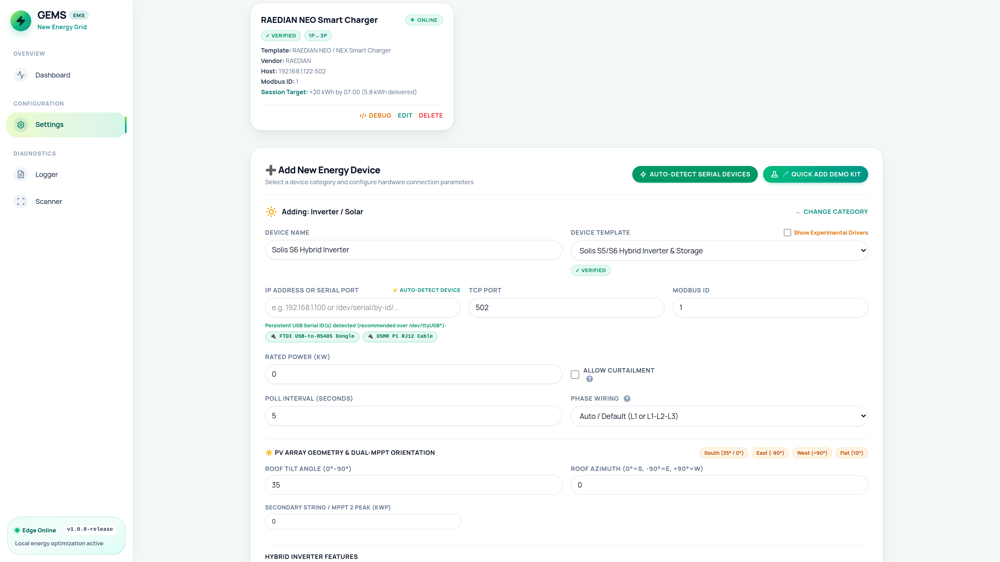

Enerlution Hybride Omvormers & LiFePO4 Batterijopslaggids
Volledige handleiding voor elektriciens & woningeigenaren met LV 51.2V parallelle & HV stapelbare batterijbekabeling (LFPWall-5000, LFPWall-10K-V2, Roller-16K, GroundHV-2500 & GH02-5324), inbedrijfstellingsparameters in de Enerlution App en optimale configuratie in GRID-EMS (GEMS).

70:B3:D5 / E4:5F:01) en de Modbus-registersignatuur, leest volledige live PV-, batterij-SOC/SOH- en nettelemetrie uit met slimme fast/slow register-tiering, voert traploze 1-Watt zonne-curtailment uit bij negatieve spotprijzen en coördineert EV-laadpalen en warmtepompen rondom uw batterijreserve.
Sectie 1: Enerlution Omvormer- & Batterij-ecosysteem (LV vs. HV)
In tegenstelling tot merken met één vaste spanningsarchitectuur produceert Enerlution twee strikt gescheiden spanningsklassen: 51.2 V laagspanningssystemen (LV) voor enkelfasige opslag en 150–600 V hoogspannings-stapeltorens (HV) voor driefasige systemen. Controleer vóór montage of bekabeling altijd of uw batterijmodel exact overeenkomt met de spanningsklasse van uw hybride omvormer.
- Architectuur A — 51.2 V Laagspanning (
LFPWall-5000,LFPWall-10K-V2,Roller-16K): Uitsluitend parallel op 51.2 V bekabeld (P+naarP+,P-naarP-). Sluit enkel aan op 48V/51.2V laagspannings-hybride omvormers (Enerlution HY / L3–L6 LVof compatibele 48V LV-omvormers zoalsSolis -L). Schakel LV wand-/rolbatterijen nooit in serie! - Architectuur B — Hoogspanning Stapelbaar (
GroundHV-2500,GH02-5324+ PDU/BCU): Afzonderlijke blokken worden in serie gestapeld onder een specifieke Hoogspannings-PDU / BCU Control Box (~153 V – 500+ Vdc). Sluit enkel aan op driefasige hoogspannings-hybride omvormers (Enerlution HYTH-5K..12K/L5–L12 HV). Houd de HV Manual Service Disconnect (MSD) / PDU-automaten UIT (OFF) en draag HV-geïsoleerde veiligheidshandschoenen tijdens de opbouw!
1.1 Specificatiematrix Enerlution Batterijopslag
| Enerlution Batterijmodel | Spanningsklasse | Nominale Spanning & Capaciteit | Max. Laden / Ontladen | Bijpassende Omvormerfamilie |
|---|---|---|---|---|
| LFPWall-5000 (Wandmontage LiFePO4) |
Laagspanning (LV) (Parallel) |
51.2 Vdc • 102 Ah5.22 kWh (45–57.6 V) |
Laden: 40 A (~2.05 kW)Ontladen: 75 A (~3.84 kW) |
Enerlution HY / L3–L6 LV(of Solis LV -L) |
| LFPWall-10K-V2 (Hoge-cap. Wandmontage) |
Laagspanning (LV) (Parallel) |
51.2 Vdc • 204 Ah10.44 kWh (45–57.6 V) |
Laden: 90 A (~4.61 kW)Ontladen: 140 A (~7.16 kW) |
Enerlution HY / L3–L6 LV(of Solis LV -L) |
| Roller-16K (Verrijdbaar Vloermodel) |
Laagspanning (LV) (Parallel) |
51.2 Vdc • 314 Ah16.08 kWh (45–57.6 V) |
0.5 C heavy-duty klasse(Tot ~ 150 A / ~7.6 kW) |
Enerlution HY / L5–L6 LV(of Solis S6-EH1P/3P-L) |
| GroundHV-2500 + PDU (Stapelbare HV-toren) |
Hoogspanning (HV) (Seriestapel) |
51.2 V / 52 Ah (2.5 kWh/blok)7.5 – 20+ kWh (3–8 blokken) |
~25 – 50 A HV DC( 5 – 12 kW continu) |
Enerlution HYTH-5K..12K(3-fasige HV Hybride) |
| GH02-5324 + BCU (Grote HV-toren) |
Hoogspanning (HV) (Seriestapel) |
Hoogspanning Modulair15.0 – 42.0 kWh |
~50 A HV DC( 10 – 15+ kW continu) |
Enerlution HYTH-8K..12K(3-fasige HV Hybride) |
1.2 Enerlution Hybride Omvormerseries & Kabel- / Beveiligingsdimensionering
| Omvormerserie | AC-netfasen | GEMS Template | Batterij DC-kabel & Externe Beveiliging |
|---|---|---|---|
| Enerlution HY / L3–L6 (LV) (3.0 / 3.6 / 5.0 / 6.0 kW) |
Enkelfasig ( 230 Vac) |
enerlution_inverter |
25 mm² (5 kWh) of 35–50 mm² (10–16 kWh+) koper via niet-gepolariseerde 2-polige DC MCCB (125 A – 200 A, ≥80 Vdc) |
| Enerlution HYTH / L5–L12 (HV) (5.0 / 6.0 / 8.0 / 10.0 / 12.0 kW) |
Driefasig ( 3×400V+N) |
enerlution_inverter |
Dubbelgeïsoleerde 6 – 10 mm² (1000 Vdc) HV solar-/opslagkabels via ingebouwde PDU HV-automaat & Manual Service Disconnect |
Sectie 2: Stap-voor-stap Bekabelingshandleiding voor Batterij & Slimme Meter
Schakel de AC-installatieautomaat in de verdeelkast, de PV DC-lastscheider, de externe DC-vermogensautomaat / HV PDU-schakelaar en alle aan/uit-knoppen op de batterijmodules volledig spanningsloos voordat u vermogens- of communicatiekabels aansluit.
2.1 Beide Bekabelingstopologieën: LV 51.2V Parallel vs. HV Stapeltoren
Architectuur A — Bekabeling van 51.2V LV-batterijen (LFPWall-5000, LFPWall-10K-V2, Roller-16K)
- Externe 2-polige niet-gepolariseerde DC MCCB: Plaats een niet-gepolariseerde 2-polige DC-vermogensautomaat of
gBatDC-zekeringlastscheider (≥ 80 Vdc;100–125 Avoor een enkeleLFPWall-5000,160–200 Avoor eenLFPWall-10K-V2ofRoller-16K) tussen de batterijbank en deBAT+ / BAT-aansluitklemmen van de omvormer. - Regel voor parallelle stroombalancering: Gebruik bij 2–3 parallelle batterijpakketten brugkabels van exact gelijke lengte (
P+naarP+,P-naarP-) en takBAT+af op Pakket 1 (Master)P+enBAT-diagonaal op deP-van het laatste pakket. Trek bij 4 of meer parallelle pakketten gezekerde aftakkabels van exact gelijke lengte (25–35 mm²) vanaf elke batterij naar vertinde koperen DC-verzamelrails van250–400 A. - Beschermingsaarding (
⏚ PE): Verbind de⏚M6-aardingsbout op de behuizing van elke wand- of rolbatterij rechtstreeks met de PE-aardrail van de omvormer via een geel/groene kopergeleider van≥ 6 mm².
Architectuur B — Bekabeling van Hoogspanningstorens (GroundHV-2500 / GH02-5324 + PDU/BCU)
- Mechanisch stapelen & muurverankering: Stel de stalen vloersokkel waterpas op tegen een draagkrachtige wand. Stapel het vereiste aantal HV-batterijblokken verticaal op elkaar (minimaal
3–4 × GroundHV-2500blokken =~153–204 Vdcom boven de opstartspanning van deHYTHte komen), monteer tussen elke laag de anti-kantel zijbeugels en plaats de PDU / BCU Hoogspannings-stuurkop bovenop de toren. - HV DC-stekkers & veiligheidsvergrendeling: Controleer of de PDU HV-vermogensautomaat op UIT (OFF) staat en de oranje Manual Service Disconnect (MSD) veiligheidsstekker verwijderd is. Leid dubbelgeïsoleerde HV-opslagkabels van
6–10 mm²(1000 Vdc) van de aanraakveiligeHV+ / HV-connectoren op de PDU naar deBAT+ / BAT-poorten van deHYTH-omvormer tot de vergrendelkragen hoorbaar vastklikken, en aard de⏚ PE-aansluitpunten van zowel sokkel als PDU op de aardrail van de omvormer.
2.2 BMS CAN-kabelpinbezetting & DIP-switchadressering voor meerdere pakketten
Enerlution-batterijen brengen gesloten-lus BMS-communicatie tot stand (SOC %, SOH %, pakketspanning, celtemperatuur-derating en laad-/ontlaadstroomlimieten) via de CAN-bus met een RJ45-kabel tussen de CAN-poort van de Master-batterij / PDU en de BMS / CAN-poort van de Enerlution-omvormer:
| RJ45-pin | T568B Aderkleur | Enerlution Batterij / PDU-poort | Omvormer BMS / CAN-poort |
Bekabelingsopmerkingen |
|---|---|---|---|---|
| Pin 1 & 2 | Wit-Oranje / Oranje | RS485-B / RS485-A (Optioneel) | RS485-B / RS485-A | Niet gebruikt in CAN-modus |
| Pin 3 & 6 | Wit-Groen / Groen | Signaal GND |
Signaal GND |
Referentiemassa |
| Pin 4 | Vol Blauw | CAN-H (CAN High) |
CAN-H (CAN High) |
Verplicht CAN-H |
| Pin 5 | Wit / Blauw | CAN-L (CAN Low) |
CAN-L (CAN Low) |
Verplicht CAN-L |
| Pin 7 & 8 | Wit-Bruin / Bruin | Gereserveerd / Afscherming GND | Gereserveerd / Afscherming GND | Controleer label fabriekskabel |
- Parallelle linkkabels & DIP-switches (uitsluitend instellen in spanningsloze toestand!):
- Enkel batterijpakket: Laat de
ADDDIP-switches in de standaard fabrieksstand voor standalone gebruik staan (0000allesOFF, ofAddress 1volgens het bijgesloten V1/V2 BMS-blad). - Meerdere parallelle LV-pakketten (
LFPWall/Roller): Lus CAT5e/CAT6-linkkabels door van Master Pakket 1Link Out / RS485-B→ Slave Pakket 2Link In / RS485-A→ Slave Pakket 3Link In. Ken in uitgeschakelde toestand opeenvolgende binaire adressen toe: Master (Pakket 1) = Adres1(ON OFF OFF OFF), Slave 1 (Pakket 2) = Adres2(OFF ON OFF OFF), Slave 2 (Pakket 3) = Adres3(ON ON OFF OFF), Slave 3 (Pakket 4) = Adres4(OFF OFF ON OFF). Beschikt uw DIP-blok op de laatste pool over een specifieke afsluitweerstandbit, zet deze terminatie dan opONop het fysiek verst verwijderde pakket. - Koppeling van 51.2V Enerlution-pakketten met LV-omvormers van derden (bijv. Solis): Controleer of het Enerlution BMS-protocol overeenkomt met de doelomvormer (
Pylon / Solis CANover Pin 4 & 5; omschakelbaar via DIP of met de USB-RS485 BMS Monitor-software van Enerlution indien af fabriek op een ander OEM-profiel geleverd).
- Enkel batterijpakket: Laat de
2.3 Bekabeling van Externe RS-485 Slimme Meter (CHINT DTSU666 & Eastron SDM630)
Voor autonome batterijregeling op zelfverbruik (Self-Consumption) en nauwkeurig fase-inzicht op woningniveau trekt u een afgeschermde twisted-pair RS-485-kabel (9600 bps, 8N1, Meteradres 1) van de slimme meter in het hoofdbord naar het Meter / 485 klemmenblok van de Enerlution-omvormer:
| Model Slimme Meter | Meter RS485-A (+) |
Meter RS485-B (-) |
Vereiste Meterbus-instelling |
|---|---|---|---|
| CHINT DTSU666 (3-fasig) | Klem 24 |
Klem 25 |
Adres 1 • 9600 8N1 |
| CHINT DDSU666 (1-fasig) | Klem 5 |
Klem 6 |
Adres 1 • 9600 8N1 |
| Eastron SDM630-Modbus V2 | Klem A / 485A |
Klem B / 485B |
Adres 1 • 9600 8N1 |
Controle CT-stroomrichting: Klik alle CT-stroomspoelen op de binnenkomende hoofdfasegeleiders direct na de officiële nutsmeter (stroomopwaarts van alle huishoudelijke kringen, EV-laadpalen en zonne-/batterijomvormers) met de CT-pijlen strikt wijzend van Net → Woning/Verbruik (Grid → Home/Load).
2.4 Veilige Soft-Start Inschakel- & Uitschakelvolgorde
- Koude polariteitscontrole: Meet met alle automaten UIT eerst met een DC-voltmeter de juiste
BAT+ / BAT-polariteit na. - Sluit eerst de DC-lastscheider: Zet de LV 2-polige DC MCCB op AAN (ON) (of plaats de HV MSD-veiligheidsstekker en zet de PDU HV-automaat op AAN) terwijl het BMS zelf nog in slaapstand staat.
- Wek het Master- / PDU-BMS: Houd de
POWER / SW-knop op de Master-batterij of HV PDU (2–3 seconden) ingedrukt zodat het interne voorlaadcircuit (pre-charge) de DC-buscondensatoren van de omvormer gecontroleerd oplaadt. Controleer of de groeneRUN-LED continu brandt/normaal knippert en de rodeALM-LED UIT is. - Schakel PV & AC-net in: Zet de PV DC-lastscheider AAN op de omvormer en schakel daarna de AC-netautomaat AAN.
POWER-knop 3s ingedrukt om het BMS in slaapstand te zetten → DC MCCB / PDU-automaat UIT (wacht minimaal 5 minuten vóór aanraking van HV-klemmen!).
Sectie 3: Stap-voor-stap Inbedrijfstelling in de Enerlution App
Download de officiële mobiele Enerlution-app (iOS App Store / Google Play) om de Wi-Fi-/LAN-communicatie in bedrijf te stellen, de BMS-handshake te verifiëren, het juiste slimme-meterprofiel te kiezen en de actieve vermogenslimieten vrij te geven voor GEMS.
3.1 Lokaal verbinden via Bluetooth of Wi-Fi Access Point
- Steek de Enerlution Wi-Fi / LAN-communicatiemodule stevig vast in de onderste
COM / Wi-Fi-poort van de omvormer. - Schakel Bluetooth en Wi-Fi in op uw smartphone (zet Mobiele Data tijdelijk UIT wanneer u verbindt met het lokale Wi-Fi AP SSID van de logger, zodat uw telefoon de lokale verbinding zonder internet niet verbreekt).
- Open de Enerlution App, kies Lokale inbedrijfstelling / Apparaat-debugging (Local Commissioning / Device Debugging), log in met uw Installateursgegevens (Installer) en koppel de communicatiestick aan uw lokale 2.4 GHz Wi-Fi of bekabeld Ethernet LAN (reserveer direct een vast DHCP IPv4-adres in uw router!).
3.2 Volledige Parameterchecklist in de Enerlution App voor GEMS-compatibiliteit
| Instelling in Enerlution App | Vereiste Waarde | Waarom deze exacte instelling essentieel is voor GEMS |
|---|---|---|
| Batterijtype & Protocol (Battery Type & Protocol / Battery Settings) |
Lithium-Ion (CAN) (Enerlution / Pylon-profiel) |
Activeert gesloten-lus BMS-telemetrie (SOC %, SOH %, pakketspanning, live stroom & thermische beveiliging). Controleer of de batterijstatus Normal / Standby / Charging toont (State 1–5, nooit 7 Offline). |
| EMS-werkmodus (EMS Working Mode / Energy Management Mode) |
Self-Consumption NIET Full Off-Grid / Static Force |
Instrueert de Enerlution-omvormer om zonne-overschotten overdag autonoom op te slaan in uw LFPWall- of GroundHV-systeem en naadloos te ontladen voor huishoudelijk verbruik en avondpieken! |
| Minimale / Reserve-SOC (Minimum / Reserve SOC / End-of-Discharge SOC) |
10 % (Standaard netgekoppeld) 15 % – 20 % (Met EPS-noodstroom) |
Beschermt de levensduur van de LiFePO4-cellen (90% DoD) en behoudt noodstroomreserve indien kritieke verbruikers op de EPS / Backup-uitgang zijn aangesloten. Houd Max Charge SOC = 100% voor celbalancering. |
| Externe Slimme Meter (External Smart Meter / Meter / CT Settings) |
Enable →CHINT DTSU666 of SDM630 |
Activeert sub-seconde afname-/injectiemeting achter de meter op de omvormer (Address 1, 9600 bps) en stuurt live metervermogens door naar GEMS. Voer in de app een test met een waterkoker van ~2 kW uit om positieve afnamepolariteit te bevestigen! |
| Actieve Vermogensregeling / Exportlimiet (Active Power Control / Export Limit) |
Disabled / Unlimited (0) (Tenzij wettelijk opgelegd door netbeheerder) |
Cruciaal! Door statische nul-injectie in de Enerlution App Uitgeschakeld (Disabled) te laten, blijven winstgevende teruglevering en Groenestroomcertificaten behouden, terwijl GEMS dynamisch 1-Watt nauwkeurige curtailment-limieten (0 W tot Nominaal W) wegschrijft zodra spotprijzen negatief worden! |
| Modbus-communicatie (Modbus Communication — RS-485 & TCP Server) |
Slave ID: 1 • Baud: 9600 8N1 Modbus TCP-poort: 502 |
Komt exact overeen met de standaardwaarden van de native enerlution_inverter-driver in GEMS voor zowel bekabeld LAN/Wi-Fi (TCP :502) als directe USB-naar-RS485 (9600 8N1). |
Sectie 4: Enerlution Toevoegen & Optimaliseren in GEMS
Open de GEMS-webinterface (https://gems.local of het IP-adres van de controller), ga naar Instellingen, klik rechtsboven in de kopbalk op het hangslot-icoon 🔒 en voer uw Installateurs-PIN in om de Gecertificeerde installateursmodus te ontgrendelen.
4.1 Automatische Detectie & Onboarding (Instellingen → Toestellen)
GEMS beschikt over ingebouwde IEEE MAC OUI-herkenning (70:B3:D5 en E4:5F:01) en ASCII model-/serienummer-registerherkenning voor Enerlution — wanneer u in het tabblad Scanner op Subnet scannen klikt, detecteert GEMS automatisch alle Enerlution-toestellen in het netwerk op poort 502! Voor industriële bedrijfszekerheid zonder Wi-Fi kunt u ook rechtstreeks verbinden via USB-naar-RS485 (/dev/serial/by-id/..., 9600 bps, 8N1, Slave ID 1):


| GEMS Toestelveld | Aanbevolen Waarde | Waarom deze instelling belangrijk is |
|---|---|---|
| Primaire Netmeter | P1 Serial Meter (p1_serial) |
Voeg eerst uw digitale P1-nutsmeter toe! Dit geeft GEMS officiële driefasige stromen en exacte Vlaamse kwartierpiekbewaking naast de interne meter van Enerlution. |
| Hardwaretemplate | Enerlution Hybrid Inverter( enerlution_inverter) |
Activeert 80 ms bus-pacing, fast/slow 5-minuten metadatacaching, SOH/SOC-telemetrie en 1-Watt nauwkeurige Fixed Active Power curtailment. (Opmerking: Als een Enerlution 51.2V-batterij op een Solis LV-omvormer is aangesloten, selecteert u het Solis-template!). |
| IP-adres of Seriële Poort | Gereserveerd statisch IP (bijv. 192.168.1.130)of /dev/serial/by-id/... |
Gebruik waar mogelijk bekabeld Ethernet of USB-RS485; controleer bij gebruik van Wi-Fi op een sterke 2.4 GHz RSSI (> -65 dBm) en een vaste DHCP-reservering in de router. |
| TCP-poort & Modbus ID | Poort: 502 • Modbus ID: 1 |
Komt overeen met de standaard Enerlution Modbus TCP-poort en RS-485 Slave ID 1. |
| Nominaal Vermogen (kW) (Rated Power) |
Exact AC-typeplaatvermogen in kW (bijv. 3.6, 5.0, 6.0, 8.0, 10.0, 12.0) |
Niet op 0 laten staan! Begrenst het plafond voor de 1-Watt actieve vermogenscurtailment van GEMS exact op de fysieke AC-capaciteit van uw omvormer. |
| Curtailment Toestaan (Allow Curtailment) |
Aangevinkt (✓) | Geeft GEMS toestemming om tijdens negatieve EPEX-spotprijzen of nul-injectie exacte Watt-limieten te schrijven en daarna automatisch terug vrij te geven naar vol vermogen. |
| Uitleesinterval (seconden) (Poll Interval) |
3 s (RS-485 / Bekabeld LAN) 5 s (2.4 GHz Wi-Fi-stick) |
GEMS bewaart statische ASCII- en levensduurregisters 5 minuten lang in cache, zodat elke snelle uitlezing enkel compacte realtime vermogens- en SOC-registers opvraagt! |
| Fase-aansluiting (Phase Wiring) |
L1, L2 of L3 (1P HY / L3–L6)of L1-L2-L3 (3P HYTH) |
Identificeert op enkelfasige installaties de exacte automaatfase voor nauwkeurige hoofdzekeringbewaking per fase. |
| Netmeter- & Batterijopties | Grid Meter: Aangevinkt (✓) indien DTSU/SDM bekabeld Battery: Aangevinkt (✓) + Exacte kWh ( 5.2, 10.4, 16.1, 10.0, 15.0...) |
Toont live LFPWall- / GroundHV-SOC % en laad-/ontlaadvermogen op het energiestroomdiagram en stemt EV-zonne-overschotladen af op de batterijstatus! |
Sectie 5: Best-Practice GEMS-strategie, EV- & Tariefcoördinatie


5.1 Regionale Optimalisatierecepten (Instellingen → Strategie)
🇧🇪 Recept A: Vlaanderen (Peak Shaving)
- Modus:
Flanders Mode (Peak Shaving) - Capaciteitspieklimiet:
2.5 kW(standaard) of3.0–3.5 kW(warmtepomp + EV). - Peak Shaving Buffer:
200 W - Actieve Curtailment:
Aangevinkt (✓), Basis0.00 €/kWh - GSC-subsidieschild: Vul
€0in (moderne PV) of de exacte certificaatwaarde (€250–€450/MWh). GEMS laat Enerlution-zonne-energie automatisch doorleveren tot-GSC/1000 €/kWh! - Werking: De
Self-Consumption-regeling van Enerlution ontlaadt de batterij om kook- en warmtepomppieken op te vangen, terwijl GEMS het EV-laadvermogen knijpt vóórdat een kwartierpiek wordt overschreden.
🇳🇱 Recept B: Nederland (Saldering)
- Modus:
Netherlands Mode (Smart Saldering) - Actieve Curtailment:
Aangevinkt (✓) - Basis terugleverprijsdrempel:
0.00 €/kWh(of de terugleverboetedrempel van uw energieleverancier). - Werking: PV-overschot overdag vult eerst uw Enerlution
LFPWall- /GroundHV-opslag en schaalt daarna Raedian EV-laden (6A–32A) en SG-Ready warm water op. Zodra de batterij 100% vol is tijdens uren met negatief rendement, regelt GEMS het Enerlution-vermogen in stappen van 1 Watt terug zodat netinjectie strak naar0 Wdaalt!
🌿 Recept C: Vast / Dubbeltarief Eco
- Modus:
Eco (Max Self-Consumption) - Actieve Curtailment:
Uitgevinkt (☐)(tenzij u een contract heeft met negatieve injectieboetes). - Hoofdzekeringbewaking: Vul de exacte waarde van uw hoofdautomaat in (
25A / 32A / 40A) en zetMeter Offline Fallback = 0 A. - Werking: Puur autonoom zonne-zelfverbruik: Enerlution geeft voorrang aan het laden van de thuisbatterij, GEMS stuurt overtollige zonnestroom naar EV's en thermische relais, en uw hoofdzekeringen zijn 24/7 beschermd.
5.2 Coördinatie van Enerlution-opslag met EV-laadpalen (Raedian Wallboxen)
- Prioriteit bij zonne-overschot overdag: Zet uw Raedian NEO / NEX / Gemini laadpaal op het GEMS Dashboard in de modus
PV Only (Solar)ofEco. Doordat de achter-de-meter regellus van Enerlution het eerste PV-overschot direct in de thuisbatterij opneemt, wacht GEMS automatisch tot het resterende zonne-overschot boven uw ingestelde EV-startdrempel stijgt (bijv.1.4 kW1-fasig) alvorens het EV-laden op te schalen — zo trekt de laadpaal nooit een lege thuisbatterij leeg en ontstaat er geen pendelgedrag! - Slim EV-laden tijdens goedkoopste uren: Schakel Slim EV-laden goedkoopste uren (Smart EV Cheapest Hours onder
Instellingen → Strategie, bijv.3–4 goedkoopste uren) in naast uw tariefformule onder Energiecontract (Instellingen → Energiecontract). Wilt u 's nachts op hoog vermogen uw wagen laden en tegelijk uw Enerlution-batterijlading bewaren voor de ochtendpiek in huis, plan het EV-laden dan tijdens vensters waarin het optionele Ontlaadvenster (Discharge Window) in de Enerlution App gepauzeerd is of begrens de EV-laadstroom onder uw Vlaamse capaciteitsplafond.
Sectie 6: Verificatiechecklist & Probleemoplossingsmatrix
6.1 6-punts Opleveringschecklist na Inbedrijfstelling
- BMS- & SOH-verificatie: Controleer dat er geen enkele rode
ALM-LED brandt op alleLFPWall-,Roller- ofGroundHV-modules en bevestig dat liveSOC %enSOH %zichtbaar zijn in de Enerlution App (Battery State = Charging / Discharging / Standby). - GEMS Online & Debug-venster: Controleer onder Instellingen → Toestellen of
Enerlution Hybrid Inverterde status ● Online toont. Klik op Debug en verifieer ~230 V netspanning, plausibel PV-vermogen (W) en live batterij-SOC %. - Controle vrijgave 1-Watt Curtailment: Controleer in het tabblad Logboek dat GEMS tijdens normale uren met positieve stroomprijzen
Released active power limit (40400=0)logt zonder schrijffouten. - Polariteitstest met waterkoker: Zet een waterkoker van ~2 kW aan en controleer op het GEMS Dashboard of het woningverbruik met ~2 kW stijgt terwijl de Enerlution-batterij soepel opschaalt in ontlading om de last op te vangen.
- Configuratieback-up exporteren: Klik onder Instellingen → Systeeminformatie op Configuratie exporteren (.json).
- Gecertificeerde installateursmodus vergrendelen: Klik op het hangslot-icoon 🔒 in de kopbalk van Instellingen om kritieke toestel- en zekeringsparameters te vergrendelen.
6.2 Symptoomdiagnose & Probleemoplossingsmatrix
| Waargenomen Symptoom | Waarschijnlijke Oorzaak | Corrigerende Actie op Locatie |
|---|---|---|
Batterijstatus toont Offline (7) of Fault (6) |
CAN-kabel in Link/RS485-poort gestoken in plaats van CAN, verkeerd BMS-protocol of DIP-switches gewijzigd terwijl ingeschakeld. |
Schakel alle modules UIT, stel unieke ADD DIP-switches in, verbind RJ45 (Pin 4 CAN-H, Pin 5 CAN-L) strikt tussen Master/PDU CAN en Omvormer BMS, en selecteer Lithium-Ion (CAN) in de Enerlution App. |
HV HYTH-omvormer herkent GroundHV-2500-toren niet |
Minder dan het minimale aantal HV-blokken in serie geplaatst, HV MSD-stekker niet vergrendeld of PDU-automaat UIT. | Controleer het minimale aantal modules voor de opstartspanning van de omvormer (≥ 3–4 blokken), vergrendel de oranje MSD-stekker, zet de PDU HV-automaat AAN en druk daarna op de PDU POWER-knop. |
GEMS meldt Connection refused of i/o timeout op :502 |
Wi-Fi-stick verloor verbinding op 5 GHz-band, IP-adres gewijzigd via DHCP of foutieve Slave ID. | Koppel de stick uitsluitend aan een 2.4 GHz Wi-Fi SSID (of gebruik bekabeld LAN / directe USB-RS485 9600 8N1), maak een DHCP-reservering in de router en verifieer Modbus ID = 1. |
| Omvormer begrenst PV-opwekking ook bij positieve spotprijzen | Statische nul-injectie / Active Power Limit is ingeschakeld gebleven in de Enerlution App. | Open de Enerlution App → Active Power / Export Control en zet deze op Disabled / Unlimited, zodat GEMS curtailment dynamisch kan vrijgeven (40400=0) en activeren (40400=1). |
| Batterij laadt op vanuit het AC-net zodra verbruik in huis inschakelt | CT-stroomklemmen van DTSU666 / SDM630 omgekeerd gemonteerd of RS485-A / B / fasespanningsaftakkingen verwisseld. |
Controleer of alle CT-pijlen van Net → Woning/Verbruik wijzen, verifieer DTSU666 klemmen 24 (A+) & 25 (B-) en bevestig dat de spanningsaftakkingen L1/L2/L3 exact overeenkomen met CT1/CT2/CT3. |
| Curtailment begrenst op een verkeerd wattage | Rated Power (kW) staat onjuist ingevuld op de toestelkaart in GEMS. |
Bewerk het Enerlution-toestel onder Instellingen → Toestellen en vul het exacte AC-typeplaatvermogen van de omvormer in kW in (bijv. 5.0, 8.0, 10.0, 12.0). |
6.3 Verificatie via Live Diagnostische Logs
Installateurs kunnen de live Enerlution-telemetrie en 1-Watt curtailment-schrijfacties controleren in het GEMS-tabblad Logboek of via de Cockpit Terminal (:9090):
# Controleer live Enerlution-uitlezingen en actieve vermogenslimieten via Cockpit Terminal: sudo journalctl -u gems.service -f | grep -i "Enerlution" # Verwachte gezonde uitvoer tijdens verbinding, curtailment bij negatieve prijs en vrijgave: [INFO] EnerlutionPoller [Enerlution HYTH-10K]: Connected via tcp://192.168.1.130:502 (ID: 1) [INFO] EnerlutionPoller [Enerlution HYTH-10K]: Set active power limit to 1450 W [INFO] EnerlutionPoller [Enerlution HYTH-10K]: Released active power limit (40400=0)
https://ems.newenergygrid.com) via Instellingen → Cloudserver voor 24-uurs prognosediagnose op afstand, live telemetrieverificatie en centraal vlootbeheer door New Energy Grid & The Charge Grid.